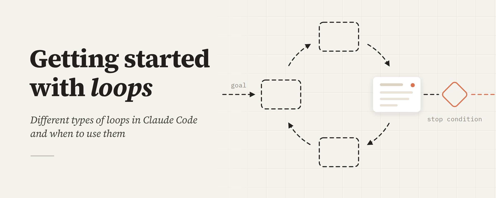
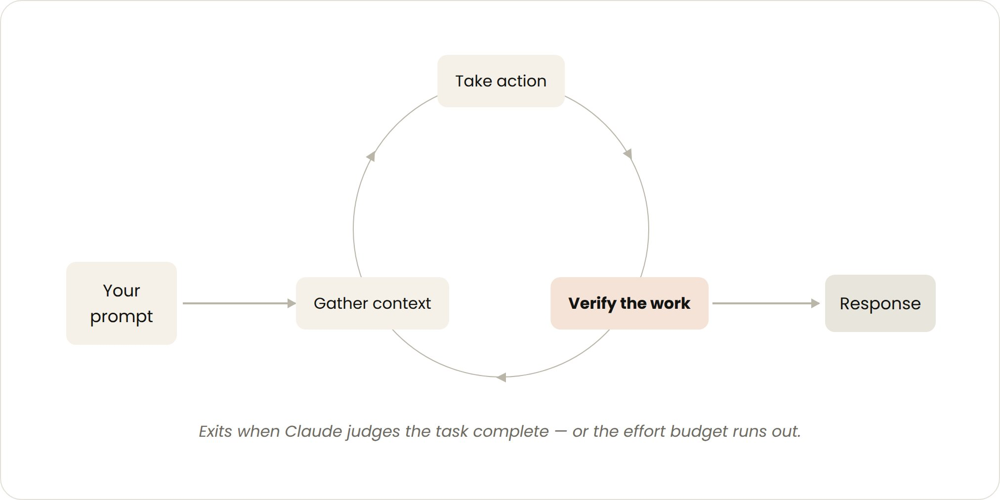
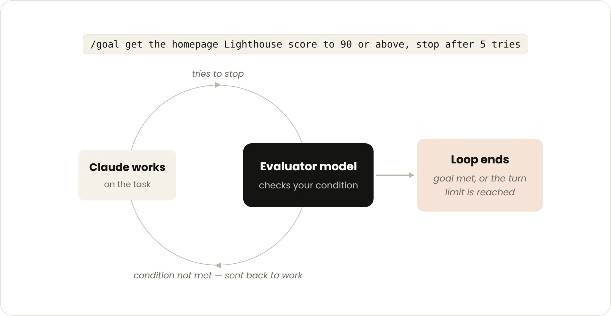
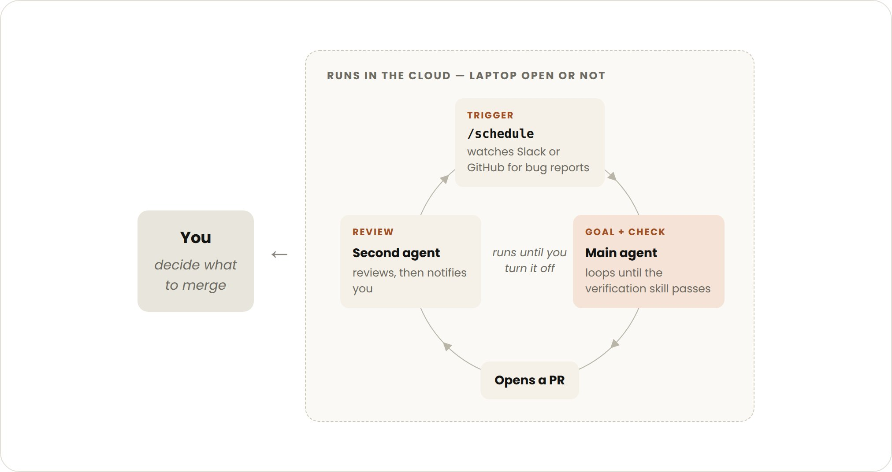

四种 Loop 完全指南
ClaudeDevs 官方解读 — Getting started with loops
Claude Code 团队把「loop」定义为 agent 重复工作直到满足停止条件 —— 按触发方式、停止方式、所用 primitive、适用任务分成 4 类:Turn-based / Goal-based / Time-based / Proactive。本文是官方文章的逐段中文解读,4 段可直接复制的命令 + 3 张原文配图 + 一张总结表都留给你。

原文封面 · Delba Oliveira(@delba_oliveira) · ClaudeDevs · 2026/07/06
最近大家都在谈「设计 loop」而不是「提示词工程」。如果你花点时间在 X 上翻，会发现 loop 这个词每个人说的都不一样。
在 Claude Code 团队，我们把 loop 定义为:agent 重复执行同一段工作，直到满足停止条件为止。我们按 4 个维度给它分类:
- How they are triggered
- How they are stopped
- What Claude Code primitive is used
- What type of task is most appropriate for each.
我们会讲主流的 loop 类型、什么时候用哪种、怎么在管好 token 的同时不丢代码质量。不是每个任务都需要复杂的 loop —— 从最简单的方案开始，按需用这些 pattern。
Four loops at a glance
先把总结表放最前面 —— 这张表是 Delba 写在文末的,把它前置:30 秒建立心智模型,后面 4 章展开讲细节。
| Loop(循环类型) | 你把什么交给 Claude | 什么时候用 | 关键工具 |
|---|---|---|---|
| Turn-based(回合制) | 验证步骤 | 探索或决策的时候 | 自定义 verification skills |
| Goal-based(目标制) | 停止条件 | 你知道「完成」长什么样 | `/goal` |
| Time-based(时间制) | 触发方式 | 工作按排期发生在项目外 | `/loop`、`/schedule` |
| Proactive(主动循环) | Prompt 本身 | 重复且定义清晰的工作 | 以上全部 + dynamic workflows |
怎么用这张表:横向看「你把什么交给 Claude」 —— 这是 loop 类型之间的本质差别。纵向看,4 类 loop 从最轻量(Turn-based,每条 prompt 就是一个)到最重(Proactive,routine 自跑几天)。
Turn-based loops
你每发一条 prompt，就已经开了一个手动 loop —— 你自己指挥每一回合。Claude 收集上下文 → 动手 → 检查 → 不行就再试 → 给你回复。我们管这叫 agentic loop。
比如让 Claude 写一个点赞按钮。它会读你的代码、动手改、跑测试，回来一份「我觉得可以了」的版本。然后你人工看一下，再发下一条 prompt。
你可以把这步验证自己做的事写成一个 SKILL.md，让 Claude 能端到端自检。要带工具或连接器，让 Claude 能「看到、测量或触碰」结果。检查越量化，Claude 自检越容易。
比如你的 SKILL.md 里可以这么写:

原文配图 · 回合制循环 · 每条 prompt 就是一个手动 loop,你来指挥每一步 · Delba Oliveira(@delba_oliveira) · 2026/07/06
Goal-based loop (/goal)
有时候一回合不够，尤其是复杂任务。Agent 在能迭代的时候表现更好。你可以延长 Claude 跑多久:用 /goal 定义「做完了是什么样」。
你把成功标准定下来，Claude 就不用自己判断「够好了」而提前结束。每次 Claude 想停，evaluator 模型会核对你的条件，把它打回去继续，直到目标达成或你定的回合数用完。
所以才说「通过的测试数」「分数超过某条线」这种确定性指标特别有效。
例如:

原文配图 · 目标制循环 · /goal 定义「做完了是什么样」,evaluator 守住停止条件 · Delba Oliveira(@delba_oliveira) · 2026/07/06
Time-based loop (/loop and /schedule)
有些 agent 工作是周期性的:任务不变，只有输入在变。比如每天早上总结 Slack 消息。还有些依赖外部系统 —— 简单的接入方式是定时去查，看变了什么。比如一个 PR 可能收到 review 或 CI 挂掉。
对这些情况，你可以让 Claude 跑 /loop —— 按间隔重复一条 prompt。例如:
`/loop` 跑在你电脑上，你关机它就停。想搬到云上，用 /schedule 创建一个 routine。
把 routine 搬到云上,用 /schedule:
Proactive loops
上面那些 primitive，加上 Claude Code 其他特性(auto mode、dynamic workflows，目前 research preview)可以组合成一个 loop，跑长时间任务。
比如处理进来的反馈，可以这样组合:
- `/schedule`(research preview)跑一个 routine，检查新进来的报告
- `/goal`定义「做完了是什么样」，用 skill 写清楚怎么验证
- Dynamic workflows 编排一组 agent:每个报告 triage、修掉、review 修法
- Auto mode 让 routine 不用停下来问你能不能继续
拼起来，一条 prompt 长这样:

原文配图 · 主动循环 · /schedule + /goal + dynamic workflows + auto mode 拼起来 · Delba Oliveira(@delba_oliveira) · 2026/07/06
Maintaining code quality
一个 loop 输出质量的好坏，取决于它周围的系统。设计系统的时候:
- 代码库本身要干净:Claude 会跟随代码库里已有的 pattern 和规范。
- 给 Claude 一个自检的方法:用 skill 把「什么是好的」写清楚给你和你的团队。
- 文档要容易拿到:框架和库的文档跟得上最新最佳实践。
- 用第二个 agent 做 code review:一个全新上下文的 reviewer 更少偏见，不会被原作者的推理带跑。你可以用内置的 `/code-review` skill，或者用 Code Review for GitHub。
当某次单独的结果不达标，别只修这一处 —— 把它编码成规则，让未来每一轮都受益。
Managing token usage
管 token,loop 要有清晰的边界:
- 挑对的 primitive 和模型:小任务不需要多个 agent 或 loop。有些任务可以上更便宜更快的模型。
- 定义清晰的成败和停止标准:说清楚「做完了是什么样」,Claude 就能更快收敛到解(但不能太快)。
- 大规模跑之前先小规模试:Dynamic workflows 能并行起几百个 agent。先用一小片工作估一下用量。
- 确定性工作用脚本:跑脚本比从头推演便宜。比如一个 PDF skill 可以带一个填表单的脚本，让 Claude 每次跑，而不是重新推导代码。
- routine 别跑得比实际需要还勤:间隔跟「你监控的东西变化频率」对齐。
- 用量复盘:`/usage` 命令按 skill / subagent / MCP 拆解最近用量;`/goal` 不带参数会显示回合数和已用 token;`/workflows` 显示每个 agent 的 token 用量，你随时可以停掉一个 agent。
Getting started
总结一下:
想上手 loop，从你已经在做的工作里挑一个。挑一个你是瓶颈的任务，问自己哪一段可以交给 Claude:你能写出验证吗？目标够清晰吗？工作是按排期来的吗？
有想法之后，跑一下 loop，观察结果(看哪里卡住、哪里跑过头)，别怕迭代。
更多信息，看 Claude Code 关于并行跑 agent 的文档，以及 loop、schedule、goal、dynamic workflows 几个页面。
本文作者 @delba_oliveira
SOURCES & CREDITS
引用与原文出处
-
ORIGINAL ARTICLE
Getting started with loops
作者:Delba Oliveira(@delba_oliveira) · 发布在 ClaudeDevs 官方账号 · 2026/07/06 · 2,981,828 浏览
原文链接:https://x.com/ClaudeDevs/status/2074208949205881033 - AUTHOR · X https://x.com/delba_oliveira
- PUBLISHER ClaudeDevs(@ClaudeDevs) · Anthropic 官方开发者账号 · 550K followers
-
CLAUDE CODE DOCS REFERENCED
Skills · SKILL.md 标准
Routines · /loop 与 /schedule 详细文档
Code Review · 内置 /code-review skill
/goal · 目标制循环
Dynamic workflows · agent 编排
Agents · 并行跑 agent -
NOTE ON IMAGES
原文 4 张图(1 张封面 + 3 张 inline 配图)全部下载到
images/2026-07-06-claudedevs-getting-started-loops/子目录,文件名与原文位置对应:cover / turn-based / goal-based / proactive。 - INTERPRETATION 本文为解读版本,按中文阅读习惯意译正文段落。所有 prompt / SKILL.md / bash 命令保留英文原貌,提供中文意译版在 prompt-card 内 EN/CN 切换;表格直接渲染中文版。术语译法:Turn-based = 回合制、Goal-based = 目标制、Time-based = 时间制、Proactive = 主动循环。
建议:不要 4 类 loop 一起搭。从 Turn-based 开始 —— 每条 prompt 都是一个手动 loop,你已经在用了。然后按任务复杂度递增:Goal-based 加成功标准,Time-based 加触发器,Proactive 拼所有 primitive。先把 Turn-based + 一个 SKILL.md 跑顺,再加 /goal,再加 /loop,最后才上 /schedule + dynamic workflows 的组合。
Not all tasks require complex loops·start with the simplest solution.
不是每个任务都需要复杂的 loop。
从最简单的方案开始,按需用这些 pattern。
— Delba Oliveira · on choosing the right loop